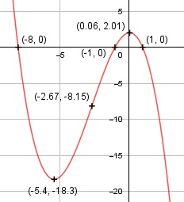

Aufgabe 36 f(x) = -0,25x3 - 2x2 + 0,25x + 2 f'(x) = -0,75x2 - 4x + 0,25, f''(x) = -1,5x - 4, f'''(x) = -1,5 Definitionsbereich: -∞ < x < ∞ Wertebereich: -∞ < f(x) < ∞ Asymptoten: - Symmetrie: - Nullstellen. - 0,25x3 - 2x2 + 0,25x + 2 = 0 |:(-0,25) x3 + 8x2 - x - 8 = 0 Durch Probieren gefunden x = 1. Hornerschema: 1 8 -1 -8 x1 = 1 1 9 8 ------------------------- 1 9 8 0 Polynomdivision: -0,25x3-2x2+0,25x+2 : (x-1) = -0,25x2-2,25x-2 -(-0,25x3+0,25x2) ------------------- -2,25x2 + 0,25x + 2 -(-2,25x2 + 2,25x) --------------------- -2x + 2 -(-2x + 2) ------------ 0 x2 + 9x + 8 = 0 p, q - Formel: p = 9, q = 8 x2,3 = x2,3 = -4,5 ± x2,3 = -4,5 ± x2,3 = -4,5 ± 3,5 x2 = -1 x3 = -8 N1(1|0), N2(-1|0), N3(-8|0) Schnittpunkt mit der y-Achse: f(0) = -0,25 * 03 - 2 * 02 + 0,25 * 0 + 2 = 2 Sy(0|2) Extrempunkte: -0,75x2 - 4x + 0,25 = 0 A, B, C - Formel: A = -0,75, B = -4, C = 0,25 x1,2 = x1,2 = x1,2 = 4 ± 4,09 x1,2 = ---------- -1,5 x1 = -5,4 f(-5,4) = - 0,25 * (-5,4)3 - 2 * (-5,4)2 + + 0,25 * (-5,4) + 2 = -18,3 x2 = 0,06, f(0,06) = -0,25 * (0,06)3 - - 2 * (0,06)2 + 0,25 * (0,06) + 2 = 2,01 f''(-5,4) = - 1,5 * (-5,4) - 4 > 0 --> Tiefpunkt (-5,4|-18,3) f''(0,06) = - 1,5 * 0,06 - 4 < 0 --> Hochpunkt (0,06|2,01) Wendepunkte: -1,5x - 4 = 0 |+1,5x 1,5x = -4 | :1,5 x = -(8/3) f(-8/3) = -0,25 * (-8/3)3 - 2 * (-8/3)2 + + 0,25 * (-8/3) + 2 = -8,15 f'''(-8/3) ≠ 0 --> Wendepunkt (-8/3|-8,15) Graph:
